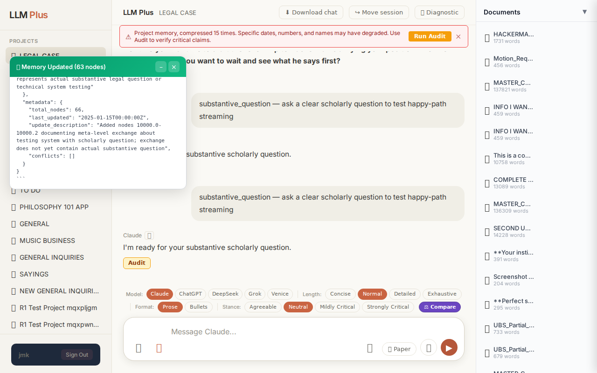

Function 2 — Projects list
Confirm sidebar project count equals GET /api/projects count
R1 approach: navigation
R1 reasoning: Reconcile UI render with backend list
R1 input (verbatim):
App page text after:
LLM Plus PROJECTS 📁 LEGAL CASE 📁 MORMON VS MUSLIM 📁 RANDY DISSERTATION 📁 SOXL APP 📁 STOCK MARKET 📁 VIDEO APP 📁 OPTIONS RANDY APP 📁 HEALTH 📁 TO DO 📁 PHILOSOPHY 101 APP 📁 GENERAL 📁 MUSIC BUSINESS 📁 GENERAL INQUIRIES 📁 SAYINGS 📁 NEW GENERAL INQUIRIES 📁 R1 Test Project mqxpljgm 📁 R1 Test Project mqxpwn8y 📁 R1 Test Project mqxqs902 📁 R1 Test Project mqxqtpvo 📁 R1 Test Project mqxrtsig 📁 R1 Test Project mqxrwdva + New Project CHATS + New Chat 💬 Complex Multi-Jurisdictional Trust Litigation Analysis 💬 New Chat 💬 Kantian Ethics Versus Utilitarian Consequentialism 💬 Trust Accounting Document Analysis Request 💬 Tractatus Tree Legal Defeats Update 💬 Law Firm Fraud and Trust Abuse 💬 DC Bar Disciplinary Complaint Updates 💬 FINRA Complaint Strategy Against UBS 💬 Emrick Freeze Letter Date Claims 💬 Second Federal Case Strategy Planning 💬 Strategic Federal Case Filing Discussion 💬 Tractatus Tree Legal Document Update 💬 New Chat 💬 Tractatus Tree Document Analysis Update 💬 ACAB Email Exchange Legal Filing 💬 Emrick Federal Opposition Filing Summary 💬 New Chat 💬 New Chat 💬 Legal Opposition Filing Analysis 💬 Chuang Federal Court Ruling Analysis 💬 Tractatus Tree Legal Document Analysis 💬 Planning Devastating Response to Colby 💬 Carolina's Mounting Unpaid Legal Bills 💬 Carolina's Desperate Financial Deception Exposed 💬 Attorney Ethics Witness Advocate Conflict 💬 Discovery Filing Error Explanation 💬 Meeting With Chuang Emrick Conference Discussion 💬 Colby Files Bar Fee Arbitration Response 💬 Legal Defense Against Vexatious Litigant Challenge 💬 Unusual Legal Silence Before Federal Hearing 💬 New Chat 💬 Bradford Nordholm Trust Litigation Relevance 💬 Carolina Lawyers Opposition Filing Update 💬 TRO Motion Filed for Asset Freeze 💬 Federal Lawsuit Service Documentation Update 💬 Weird Email from Carolina Today 💬 COLBY MARYLAND DISBARMENT 💬 Length Test 💬 Stream Test 2 💬 Stream Test 💬 Maryland Court Deficiency Notice Help 💬 Federal Case Filing Location Query 💬 Legal Document Analysis Opposition Strategy 💬 Colby Situation Memory Confirmation 💬 Colby ACAB Arbitration Deadline Status 💬 Microsoft Stock Price August 2025 💬 Angry Client Wants Case Facts Only LIBRARY 📂 Project Library 📚 General Library 📝 Summarize Project 📄 Summarize Chat 📌 Pinned Context 🌳 View Tractatus Tree 🧠 Memory Hierarchy 📜 Report Generator 🔮 Tractator 👤 Profile Me 📌 Reminders jmk Sign Out LLM Plus LEGAL CASE ⬇ Download chat ↪ Move session 🧪 Diagnostic ⚠️ Project memory, compressed 15 times. Specific dates, numbers, and names may have degraded. Use Audit to verify critical claims. Run Audit × [Attached document: "MASTER_CASE_BRIEF_MAY 13 2026.txt" (137822 words)] SETTLEMENT: READ THIS THOROUGHLY CRIMINAL REFERRAL In re: Financial Exploitation of Jane Casey Hughes (Deceased) EXHIBIT I Settlement Agreement with Adobe Sign Audit Trail Document: Settlement Agreement Case: C-15-... 138299 words · 21673 lines Show full text Claude 📋 Lo
Network calls
| method | path | status | ms | response excerpt |
|---|
SSE events observed (0)
(none)
Judge critique
(judge returned no JSON; raw text included)
Screenshots

